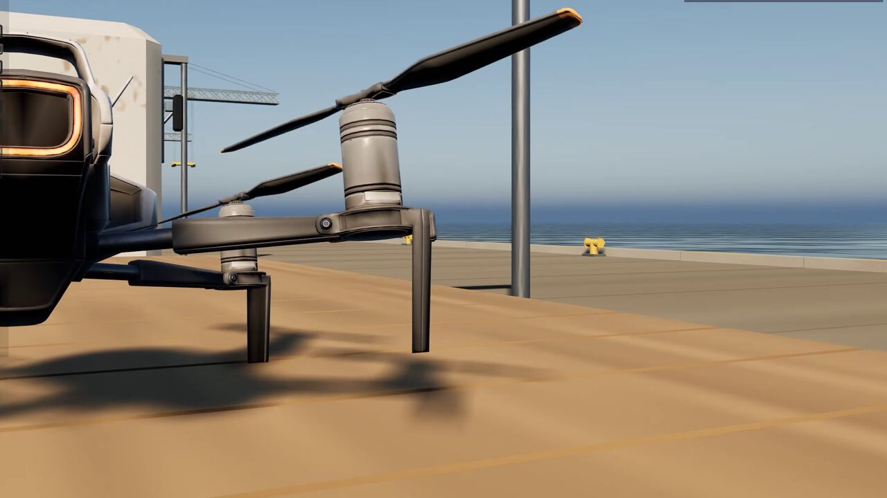
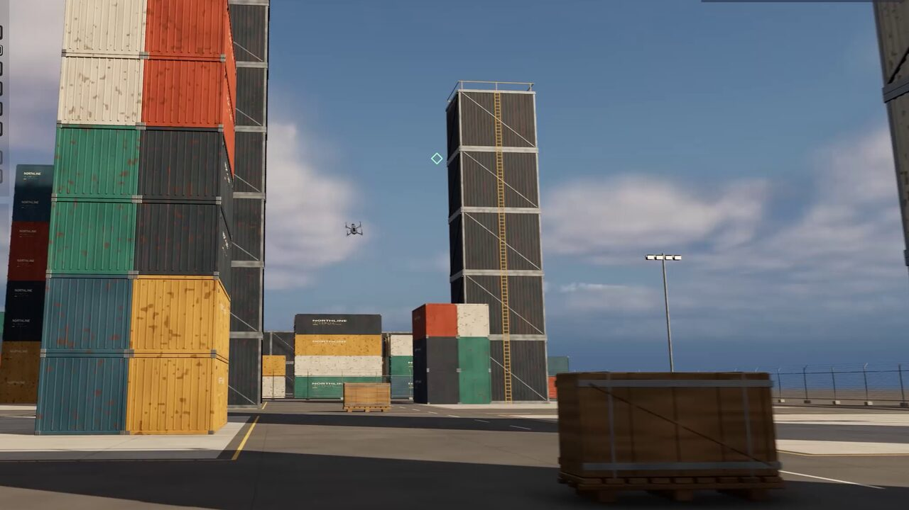
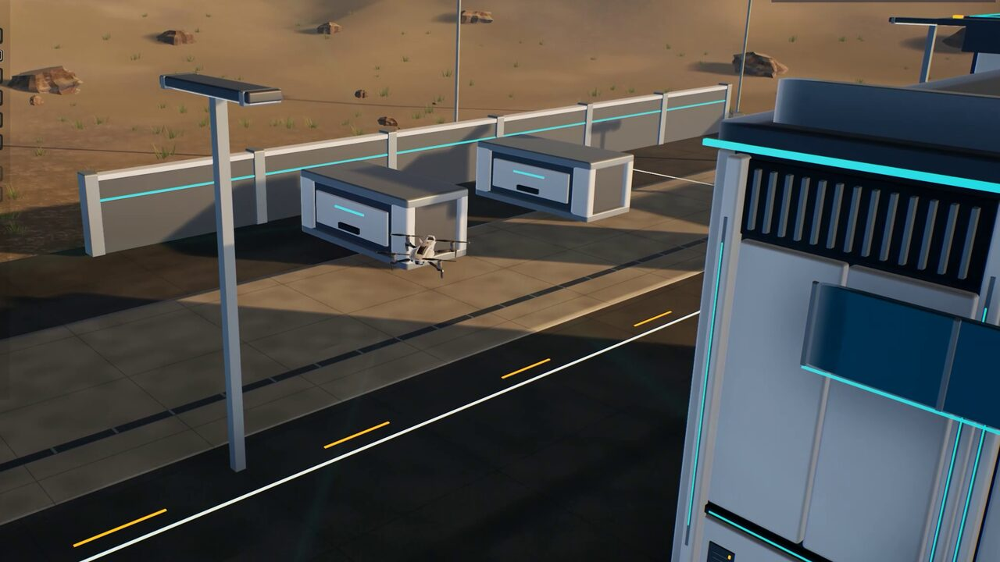
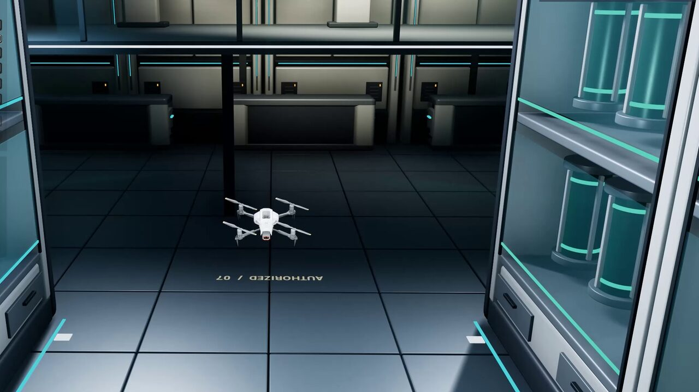
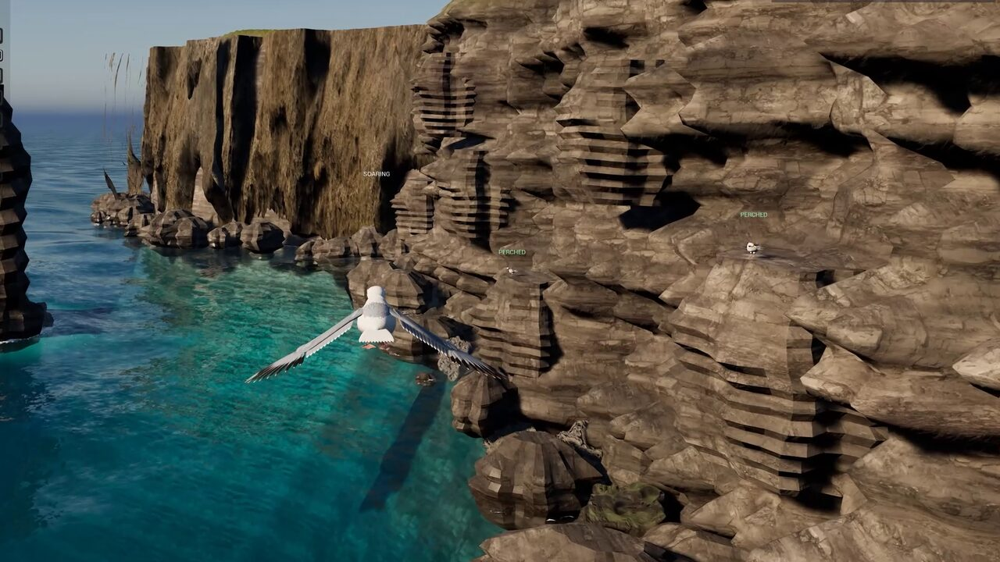

UEDEV / 3D Navigation AI / Flying AI · Updated
v3.6.0 Use case · Flying AI
Flying AI and drones for Unreal Engine 5
Drones that bank into their turns, land on a rolling ship's deck and hunt through city streets, and birds that glide in to perch on a cliff ledge. LCM 3D Navigation AI gives every flying agent a real route through the air, a 6-DOF body that flies it, and a library of ready-made behaviours, from one hero drone to a Mass Entity flock.
Rated 5.0 out of 5 from3 ratings on Fab- LCM 3D Navigation AI
- Unreal Engine 5.2–5.8
- Flight archetypes
- 4
- BT, StateTree & Mass nodes
- 85
- Mass Entity agents
- 10,000+
- Unreal Engine
- 5.2–5.8

A route through the air, not along a floor
Unreal's Recast navmesh describes where a character can stand. A drone needs to know where there is empty air, so LCM 3D Navigation AI carves the level into a Sparse Voxel Octree of navigable volume and plans through it in full 3D: up, down and diagonally through shafts, under bridges and between towers.
Theta* and Lazy Theta* give any-angle routes that cut the corners a grid would force, and every smoothed path is checked against the level's geometry, so a drone never cuts through a wall to reach its goal.

A body that flies like the real thing
Navigation gives guidance; LcmFlightMovementComponent turns it into flight. Four archetypes each bank, climb, glide and stop differently: Multirotor drone (tilt-to-translate), Jet / Fixed-Wing, Bird (flap-glide) and Fish. Thrust, lift, drag and an attitude PID drive the body, with inertia, turn-rate limits and arrival deceleration, and an animation-drive struct feeds your blendspaces.
Flight follows the level's gravity (World Settings or a Physics Volume), and Max Pitch, Flare Pitch and Leg Friction are set per bird in its Flight Config.
Landing, even on a moving deck
The Land task finds its own landing point and flies the approach relative to the deck, so a courier drone can put down on a moving, rolling ship or a moving lorry and take off again with the deck's velocity. Drones descend vertically; birds glide in with a braking flare. EQS generators and tests find landing sites for flying agents.
Perch lands on tagged ledges and pads, and agents in a crowd share the work: no two take the same perch. Since 3.6 drones no longer bob over a perch or a landing pad, and gliding birds land from where they are.

Drones that hunt, engage and search
Engage Target finds a firing position, keeps line of sight and fires only on a clean shot. In 3.6 it holds that position until the target leaves it, flies to it in formation and leads a crossing target. Investigate searches around a last-known position, hunters remember what they lose sight of, Flee breaks line of sight and hides, and Scan Area sweeps a volume.
Sentries can see only through Unreal's AI Perception sight cones, and Engage can take its sightings from AI Perception.

Behaviour Tree, StateTree or one Blueprint node
Author the same flight in the system your team already uses: 21 Behaviour Tree tasks, 5 decorators and 5 services; 25 StateTree tasks, 8 conditions and 8 evaluators at full parity; or Mass StateTree for crowds. For the simplest case, the Fly To Location latent node flies any pawn to a point or an actor with no Behaviour Tree, StateTree or AI Controller, and Unreal's own Move To and EQS can plan through the octree too.
See it in the demo levels
These levels are part of the 57 free demo levels you download from inside the editor (LCM Nav3D menu › Get the Demo Levels).

Harbour
A courier drone lands on a moving, rolling ship and a moving lorry.
- Land
- Take Off
- BT · StateTree

Hunter Drone
A gunner drone hunts a runner through the streets; Hunter Pack in Mass.
- Engage Target
- BT · ST · Mass

Sentry Drones
Sentries see only through AI Perception, take EQS firing positions and land.
- AI Perception
- BT · ST · Mass

Warehouse
A security drone perches, sweeps the hall, engages a thief and searches.
- Perch
- Investigate
- BT · ST · Mass

Sea Cliffs
A colony of 6-DOF gulls perch, ride an updraft and scatter.
- Perch
- Orbit
- BT · StateTree

City
Streamed open world with rooftop gaps and street canyons.
- Open world
- BT · ST · Mass
Common questions
How do I make a drone fly to a location in Unreal Engine 5?
Place one LcmNavigationManagerSVO in the level so it builds the navigation octree, add LcmFlightMovementComponent to the drone pawn with the Multirotor archetype, then use the Fly To task in a Behaviour Tree or StateTree. For a one-off move, the Fly To Location Blueprint node flies the pawn with no AI Controller at all.
Can a drone land on a moving ship or vehicle?
Yes. The Land task finds its own landing point and flies the approach relative to the deck, so a drone can land on a moving, rolling ship or a moving lorry and take off again with the deck's velocity. The Harbour demo shows both.
Which flight models are included?
Four 6-DOF archetypes: Multirotor drone (tilt-to-translate), Jet / Fixed-Wing, Bird (flap-glide) and Fish (undulatory), each with its own banking, climb and turn character and tuned per agent.
Can flying AI and ground AI share a level?
Yes. Run hybrid levels where walking agents use Unreal's Recast navmesh and flying agents use the volumetric octree; the Crowd Avoidance Bridge lets Detour steer Recast agents around flying pawns.
Read more in the free documentation: